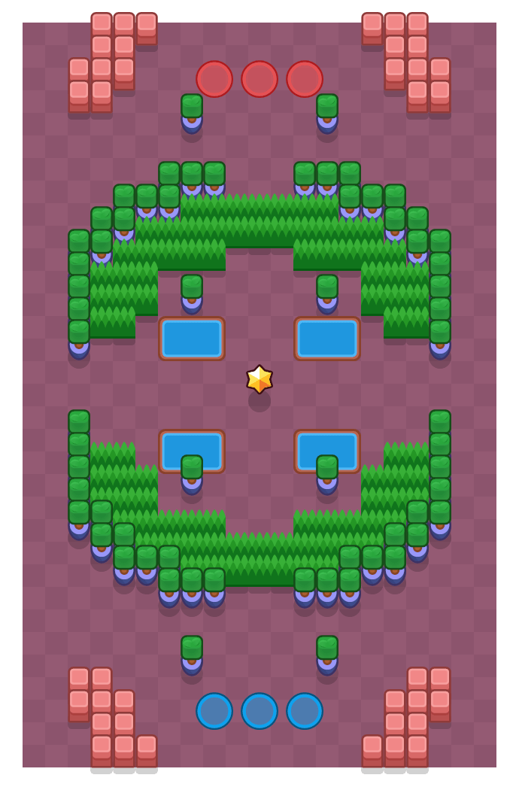

불펜(Bull Pen)

게임 모드
현재 상태
삭제
제작자
슈퍼셀
존재 기간
2019년 1월 29일~2019년 6월 29일
마지막 경쟁전 등장
2019년 6월 14일
개활지 바운티 시대가 닫히고 신규 바운티 맵이 대거 추가된 2019년 1월 업데이트 때 추가된 바운티 맵으로, 위 아레에 드넓은 덤불이 있는 것이 포인트이다. 덤불 덕에 매복 파이퍼뿐만 아니라 불, 쉘리 등 다양한 픽이 선보여졌었다.